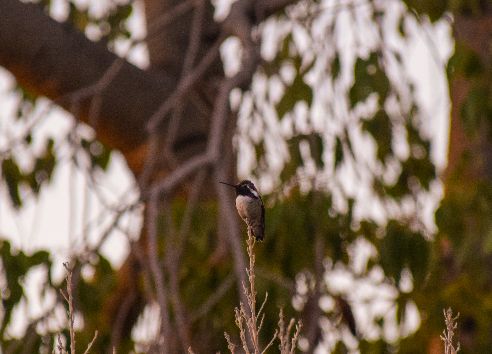

PORTFOLIO
I’ve worked on a number of projects and have a lot of creative hobbies. Here’s a look into some of what I’ve worked on in the past, and what I may be able to do in the future.
Most of the short films I’ve worked on are still in development, so here’s a couple to watch in the meantime!
JOLANDA: A short documentary showing the life of a local New Mexican bead artist. I was the director of photography and editor for this. It won the Cherry Reel film festival at UNM in 2023.
REM Girl: A very, very horror short I did for fun over the summer. I wrote, directed, and edited this.
A lot of my artwork has been inspired by comic artists - both classic and more recent artists - like George Pérez, Alex Ross, Jorge Jiménez, Joëlle Jones, and Travis G. Moore. Though I’m not half as good as those artists, I hope to be able to convey character and emotion as well as they can now. (Left to Right): A knight with vines wrapped around her, a golden prince, another cool lady with a sword covered in blood, a render of two skeletons kissing, Medusa in her cave, and a study of lighting and colors with an angel.


 copy.png)
I’m more of a wildlife photographer than anything, but I will try to capture anything that catches my eye. Bugs, birds, and trees are my favorites!


